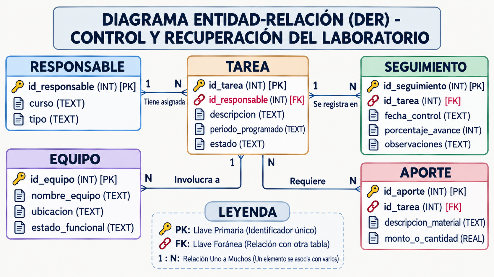
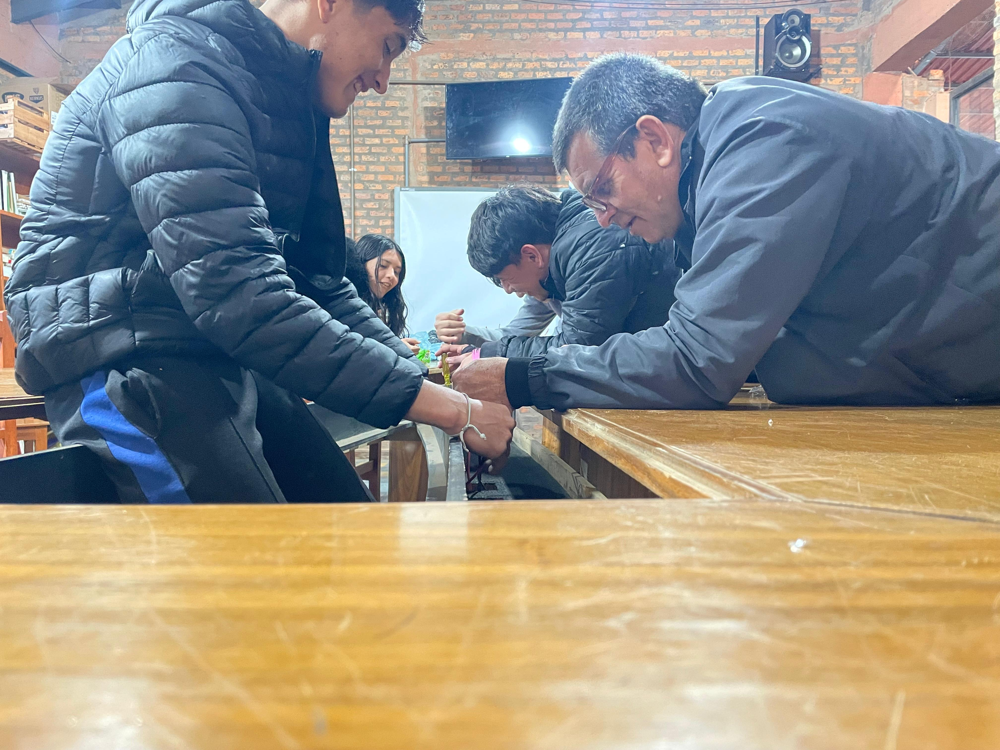
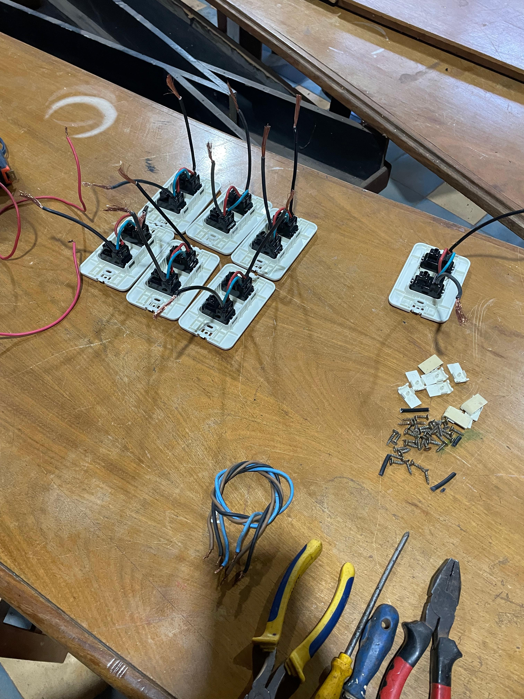

Evolución del proceso (2025–2026)
El Proyecto de Promoción duró dos años. El proyecto actual no empezó en 2025: comenzó después de un cambio de proyecto, que se explica acá.
Primer proyecto: ConduApp
Qué se hizo: Se realizo aplicación web/móvil diseñada para resolver la falta de un sistema ágil que permita a las instituciones educativas registrar y notificar el comportamiento diario de los estudiantes en tiempo real. Su propósito principal es fortalecer la comunicación entre el colegio y las familias, logrando un seguimiento de la conducta estudiantil que sea transparente, rápido y efectivo.
Decisión de pasar a la recuperación del laboratorio
Motivo del cambio: El proyecto inicial (Condup App, una web para registrar conductas) resultaba redundante, ya que el colegio utiliza herramientas más rápidas y prácticas como WhatsApp para esa comunicación.
Elección del nuevo proyecto: Se decidió priorizar una necesidad física real de la institución, recuperando una mesa de la biblioteca para convertirla en un laboratorio de informática. Primera revisión del espacio y de las necesidades, ya dentro del nuevo proyecto. Instalación de cableado, colocación de cargadores, soportes de madera para las computadoras, pruebas de funcionamiento y documentación. Entrega del informe final: 22/10/2026.Diagnóstico inicial del laboratorio
Ejecución, pruebas y cierre
Seguimiento de tareas
| Tarea | Fecha | Avance | Estado | Evidencia / observación |
|---|---|---|---|---|
| Instalación de cableado | Agosto | 100 % | Completada | Mesa funcional y eficiente. |
| Colocación de cargadores | Agosto | 100 % | Completada | Cargadores funcionales; probados en cada equipo. |
| Soporte para computadoras | Agosto | 100 % | Completada | Cada computadora tiene un soporte de madera. |
| Reparación de fallas | completar fecha | completar % | completar | nombrar cada reparación realizada (equipo, falla, qué se hizo) |
| Extensión / zapatilla para computadora | — | 0 % | Pendiente | Falta comprar las extensiones. |
| Limpieza del laboratorio | 19/10 | 100 % | Completada | Se hará cuando se consigan los materiales. |
| Organización del laboratorio para reutilización | Mayo | confirmar % | Parcial | Quedan pendientes la limpieza y las extensiones. |
Datos reales del registro (base de datos)
La base de datos fue la herramienta de seguimiento del equipo. Estas capturas muestran sus datos reales.


Cronograma
Planificación de las etapas del proyecto, con fechas de inicio y fin.
| Mes | Actividades |
|---|---|
| Marzo | Cambio y elección del nuevo proyecto. |
| Abril | Evaluación y planificación de la restauración. |
| Mayo | Elaboración de presupuestos y compra de materiales. |
| Junio - Julio | Pausa de actividades por pasantías. |
| Agosto | Reparación, restauración y armado de las instalaciones. |
| Septiembre | Finalización y pruebas de funcionamiento. |
| Octubre | Preparación del informe y defensa. |
| Noviembre | Presentación y defensa final del proyecto. |
Inventario de equipos revisados
| Equipo / puesto | Ubicación | Estado funcional | Intervención realizada | Fecha |
|---|---|---|---|---|
| PC 1 | completar | completar | completar | completar |
| PC 2 | completar | completar | completar | completar |
| (agregar una fila por equipo revisado) |
DER: base de datos de seguimiento
Modelo de la base de datos que usó el equipo para registrar tareas, responsables y avances. Es una herramienta de apoyo, no el producto principal del proyecto.

Ver las tablas explicadas en texto
RESPONSABLE
- id_responsable (clave primaria)
- curso
- tipo
TAREA
- id_tarea (clave primaria)
- id_responsable (clave foránea)
- descripcion
- periodo_programado
- estado
SEGUIMIENTO
- id_seguimiento (clave primaria)
- id_tarea (clave foránea)
- fecha_control
- porcentaje_avance
- observaciones
EQUIPO
- id_equipo (clave primaria)
- nombre_equipo
- ubicacion
- estado_funcional
APORTE
- id_aporte (clave primaria)
- id_tarea (clave foránea)
- descripcion_material
- monto_o_cantidad
Cómo se relacionan
- Un responsable tiene muchas tareas.
- Una tarea tiene muchos seguimientos (controles de avance con fecha).
- Una tarea se aplica a muchos equipos.
- Una tarea recibe muchos aportes de materiales.
Este proyecto no desarrolla un software con clases, por eso no se publican diagramas de clases ni de casos de uso.
Manual de usuario (resumen)
Para quién es
Para estudiantes y docentes que usan el laboratorio recuperado.
Antes de usar un equipo
- Comprobar que el puesto esté limpio y ordenado.
- Revisar que cables y conectores no tengan daños.
- Verificar que monitor, teclado y mouse estén conectados.
- No usar extensiones o zapatillas dañadas.
- Mantener líquidos y alimentos lejos de los equipos.
Durante el uso
- Encender el equipo como indique el docente.
- Esperar a que el sistema termine de iniciar.
- Usar solo los programas autorizados.
- No abrir el gabinete ni modificar conexiones internas.
- Avisar si el equipo se comporta de forma anormal.
Si hay una falla
Si el equipo no enciende, no muestra imagen, no reconoce un periférico o falla la conectividad, dejá de manipularlo y avisá al responsable. La falla se registra para diagnosticarla y priorizarla.
Al terminar
- Guardar el trabajo y cerrar las aplicaciones.
- Apagar correctamente el equipo.
- Dejar los periféricos en su lugar.
- Informar cualquier problema detectado.
Manual de desarrollo (resumen)
Flujo de intervención de la Notebooks Dell
- Identificar el equipo o elemento con problema.
- Registrar el síntoma o la necesidad.
- Hacer una inspección visual y pruebas básicas.
- Decidir qué tipo de intervención hace falta.
- Asignar responsable y priorizar la tarea.
- Hacer el mantenimiento o la reparación de forma segura.
- Probar de nuevo el recurso.
- Registrar el resultado y dejar constancia de lo pendiente.
Diagrama de Estados de Intervención

Flujo de intervención del laboratorio
Tareas
- Reemplazar el cableado viejo
- Instalar el cableado nuevo
- Limpieza del laboratorio
- Colocación de los cargadores
- Seguridad para el movimiento de los cargadores
Proceso
- Verificar sistema eléctrico
- Desmontar cableado
- Averiguar el presupuesto
- Comprar los materiales necesarios
- Montar el cableado y verificar el funcionamiento
- Desmontar caja de cargadores
- Limpieza de los cargadores
- Montar los cargadores
- Verificar el funcionamiento de los cargadores
- Limpieza del laboratorio
Pruebas finales
Encendido, imagen del monitor, teclado y mouse, reconocimiento de dispositivos, conectividad, una actividad práctica básica y apagado sin anomalías.
Herramientas usadas
Para el proyecto de recuperación del laboratorio se utilizaron herramientas como alicate, pinza, cerrucho, martillo y taladro para el armado de los soportes de madera, la fijación de elementos y la instalación del cableado. La cinta aislante y los cintillos permitieron aislar conexiones y mantener los cables ordenados y seguros en cada puesto. Por último, la aspiradora se empleó en la limpieza del espacio y de los equipos, dejando el laboratorio en condiciones adecuadas para su reutilización.
Metodología
Kanban simplificado: tareas pendientes, en ejecución y terminadas, con un responsable y un avance registrados en la base de datos SQLite.
Uso de IA y verificación
La IA fue una herramienta de apoyo para la documentación, la página web y la base de datos. Cada entrada separa lo que se pidió, lo que respondió la IA y lo que hizo el equipo.
09/06 · ChatGPT · Uso de SQLite
Prompt
Necesito que me ayudes a desarrollar el proyecto «Sistema de gestión para la recuperación del laboratorio de informática». Quiero que actúes como un tutor de informática y me guíes paso a paso, explicándome cómo realizar cada etapa. No me des directamente las respuestas; dame pistas, ejemplos y preguntas que me permitan razonar y encontrar las soluciones por mi cuenta. Utiliza explicaciones sencillas y breves para facilitar mi aprendizaje.
Respuesta de la IA (Resumen)
Desarrollaremos el proyecto «Sistema de gestión para la recuperación del laboratorio de informática» paso a paso, comenzando por identificar los problemas del laboratorio, definir los requisitos, diseñar el sistema, crear la base de datos con SQLite, programar sus funciones y realizar pruebas. Durante el proceso actuaré como tu tutor, brindándote explicaciones sencillas, ejemplos y pistas para que puedas razonar y encontrar las soluciones por tu cuenta, aprendiendo en cada etapa.
Qué hizo el equipo
El equipo utiliso esta respuesta de la IA para lograr hacer la base de datos en SQLite.
Captura de la respuesta de la IA

Galería de evidencia



Proyecto de 2025: interfaz de ConduApp
Capturas de la interfaz de la aplicación del primer proyecto. Para cargar una, reemplazá el recuadro gris por la línea que está comentada debajo.


Video del proyecto terminado
Título del video · completar fecha
Reflexión final
La distribución de tareas y el seguimiento de avances facilitaron la organización del equipo. Cambiar de proyecto a mitad del recorrido nos obligó a diagnosticar de nuevo y a trabajar con los recursos que teníamos.
Para un próximo proyecto haríamos desde el inicio un inventario técnico completo, usaríamos una ficha por equipo y tomaríamos fotos antes y después de cada intervención.
Quedan pendientes la compra de extensiones y la limpieza del laboratorio, que nos proponemos completar.
Equipo e institución
3.º BATIN · Doble turno
Institución: Centro Educativo Departamental Miguela Rodríguez Araujo, Luque, Paraguay
Docente tutora: Lic. R. Daniela Ferreira Delgado
Integrantes:
- Jesús Matías Estigarribia Zaracho (coordinador general)
- Néstor Facundo Cubilla Ávalos (encargado de recursos)
- Melany Elizabeth Giménez Duarte (recursos y comunicación)
- Fernando Gabriel Mir Tillaría (documentación y pruebas)
- Angel Javier Pedrozo Estigarribia (encargado técnico)